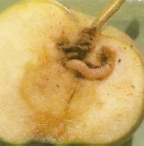
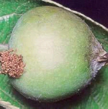
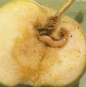

Bi 58 EC
Bi 58 EC
 Sinoratox 40 EC
Sinoratox 40 EC
 Flibol E
Flibol E
 Unitron 40 EC
Unitron 40 EC
 Decis 2,5 EC
Decis 2,5 EC
 Ekalux 25 EC
Ekalux 25 EC
 Hostathion 40 EC
Hostathion 40 EC
 Dimilin 25 WP
Dimilin 25 WP
 Thiodan 35 EC
Thiodan 35 EC
 Zolone 35 EC
Zolone 35 EC

Almamoly
Cydia pomonella
Az alma legismertebb kártevője. Lárvája a gyümölcsben él.
Almán kívül a diót, a körtét és esetenként a szilvát is károsítja. Az első
nemzedék kártétele a dió nagyságú zöld almában jelentkezik, és júliusig tart. A
második nemzedék a nyár végén, főképpen az érés időszakában károsít.
Megkésett fejlődésű hernyók a szüret idején is az almában vannak. A hússzínű,
kifejlett lárvák a magházba rágják be magukat. A telet kéregrepedésben, laza
szövedékben a lárvák vészelik át.
Védekezés:
Vegetációs időben, a lárvakelések és befurakodások időpontjában rovarölőszeres
védekezés a célravezető. A védekezés időpontját szexuálatraktáns csapdával
állapíthatjuk meg legkönnyebben. A kezeléseket a lepkék tömeges rajzásától
számított 7-10 napon belül kell elvégezni. Elhúzódó rajzás esetén a permetezést
tíz nap elteltével ajánlatos megismételni.
Javasolt permetezőszerek:
|
 |